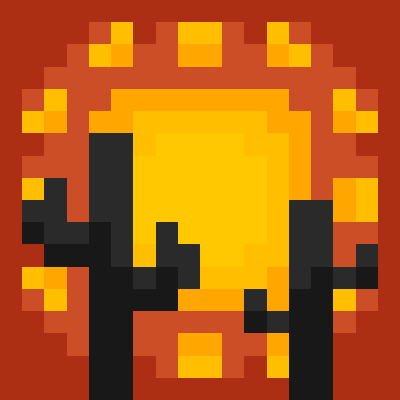
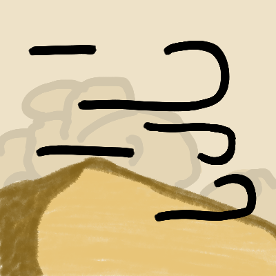
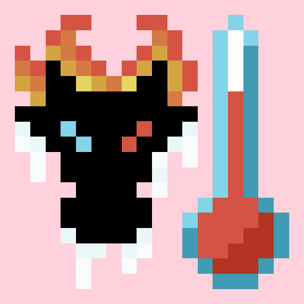
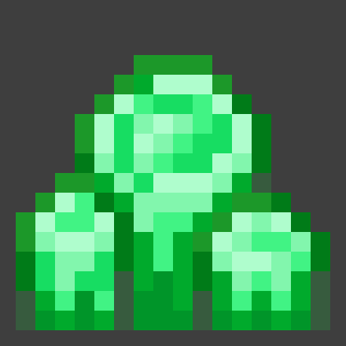
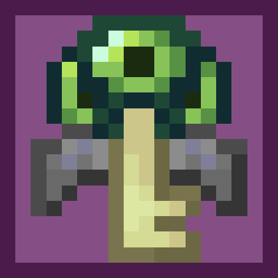

Hello, I'm TheDeathlyCow!
I'm a software engineer, game developer, and Minecraft modder. My mods mostly focused on enhancing the survival aspects of the game to make it more challenging, but fair.
Minecraft Mods
Frostiful
A mod about snow, hypothermia survival, and frost magic.

Scorchful
A Dune-inspired mod about heat-based survival and combat.

Immersive Storms
Immersive fog and weather effects for mountains, deserts, pale gardens, and more!

Thermoo
A library for entity temperature and environment simulation.
NovoAtlas
A data-driven image based world generator for Minecraft.

More Geodes
Adds more geodes, what did you think?

Vaulted End
A quality of life mod that makes Elytra easier to get in multiplayer.